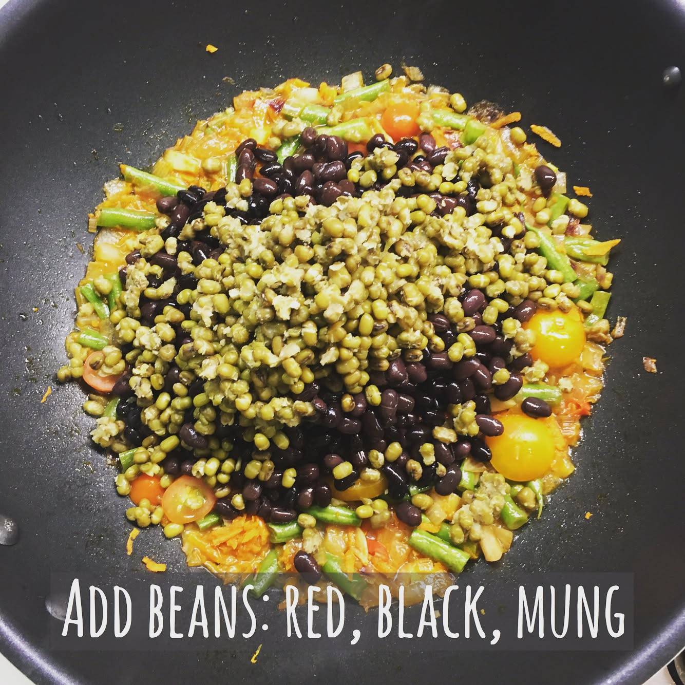

Mixed beans stew - very nourishing and delicious vegan dish. Beans are great source of fiber, they will keep you going for very long time 🏊🏼🚴🏼🏃🏽you will need 2 tbsp of olive oil, tomatoes (the more the juicier), 3 cloves of garlic chopped, french beans cut into 3-4 cm long pieces, 1 grated carrot, 1 big red onion chopped, 1 chopped chilli padi (bird's eye chilli), ground paprika - stew all together well until onions and carrots are soft. Add cooked red beans, black beans, mung beans (prepare in advance, it will take about 1 hour to cook black and red beans, slightly less for mung beans), add water and mix well. Add salt, more paprika and herbs: basil, dill, parsley, thyme. Mix well and enjoy! --------- #triathlon #ironmantri #healthyfood #sportnutrition #running #swimbikerun #marathon #dietfood #cervelo #orbea #specializedbikes #giantbikes #canyonbikes #bmcbikes #boardmanbikes #trailrunning #ironmantraining #marathontraining #veganrecipes #veganfoodshare
2017-04-18 09:34:34
Back to main page